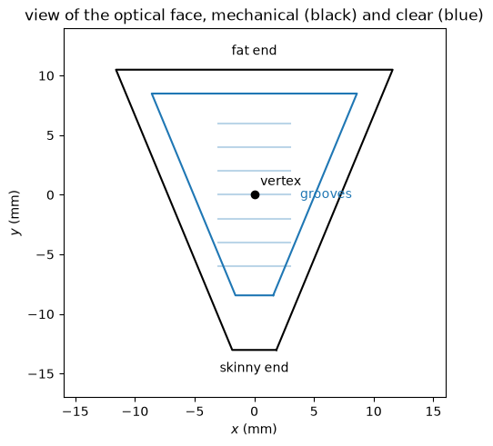
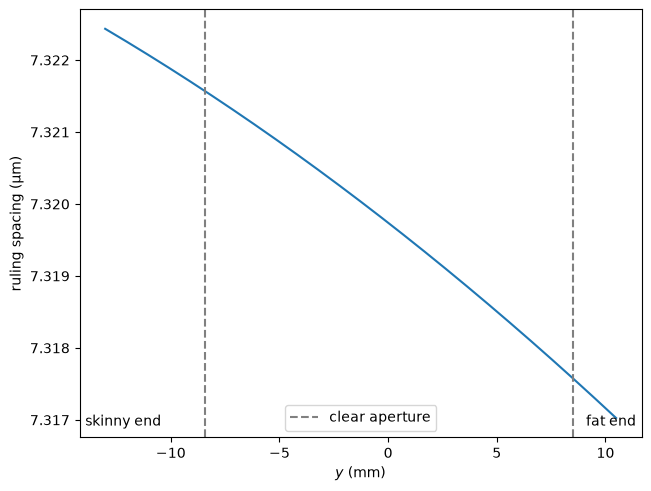
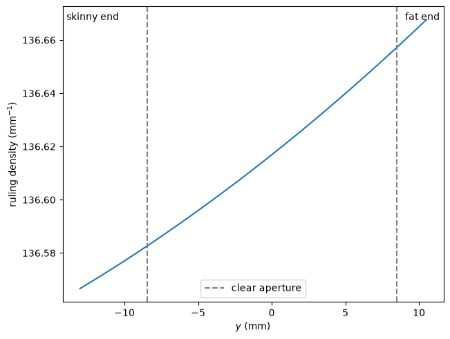
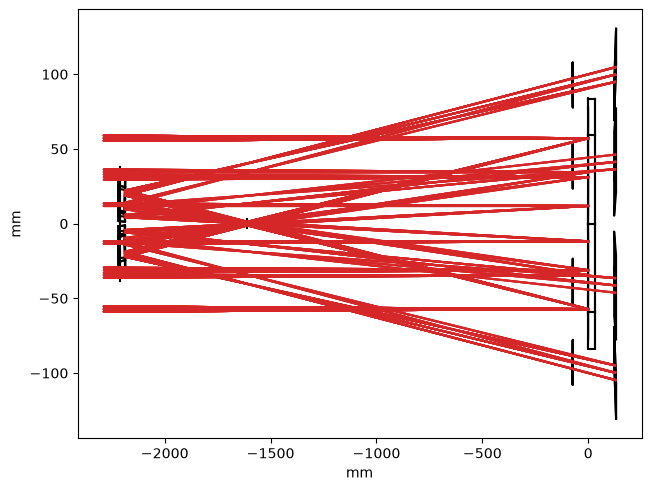

Grating Specifications#
This report collects the specifications of the ESIS-II diffraction gratings in a form that can be independently checked against the vendor’s ruling prescription, in the same spirit as the primary-mirror sag table in Design & Specifications.
The ESIS-II gratings are spherical, varied-line-space (VLS) gratings with a
trapezoidal aperture:
a skinny end which points toward the axis of symmetry of the instrument,
and a fat end which points away from it.
Since the flight rulings are too fine to test with visible light,
each science grating is paired with a visible-light alignment grating whose
ruling spacing is scaled so that a HeNe laser reproduces the flight geometry.
The alignment gratings are modeled by
design_visible(),
a visible-light version of the instrument which inherits everything from the
EUV design except the grating ruling spacing.
We start by verifying how the ruling spacing changes from the skinny end of the grating to the fat end.
[1]:
import numpy as np
import matplotlib.pyplot as plt
import astropy.units as u
import astropy.visualization
import pandas
import named_arrays as na
import esis
Load a single channel of the EUV optical design, which carries the science grating model that the specifications below are derived from.
[2]:
instrument = esis.flights.f2.optics.design_single(num_distribution=0)
grating = instrument.grating
Coordinate System#
All positions on the face of the grating are expressed in the following right-handed coordinate system:
The origin is the vertex of the optical surface, which lies on the axis of symmetry of the trapezoid. Note that the vertex is very nearly the center of the clear aperture (within 25 μm), not the center of the substrate, which is about 1.3 mm closer to the skinny end.
The \(y\) axis lies in the plane of the face along the axis of symmetry of the trapezoid, with \(+y\) pointing from the skinny end toward the fat end. When the grating is installed, \(+y\) points radially away from the axis of symmetry of the instrument, and \(y\) is the direction of dispersion.
The \(x\) axis lies in the plane of the face, parallel to the grooves.
The \(z\) axis is normal to the vertex of the optical surface, pointing away from the substrate.
The grooves are parallel to the \(x\) axis and the ruling spacing varies only as a function of \(y\).
Plot the clear and mechanical apertures of the grating in this coordinate
system.
Note that the surface-local coordinates of the optika model swap the
roles of \(x\) and \(y\) relative to the definition above
(the model measures the ruling spacing along its local \(x\) axis),
so the model’s axes are interchanged whenever we evaluate or plot below.
[3]:
surface = grating.surface
y_skinny = -(grating.halfwidth_inner + grating.width_border_inner)
y_fat = grating.halfwidth_outer + grating.width_border
with astropy.visualization.quantity_support():
fig, ax = plt.subplots(constrained_layout=True)
ax.set_aspect("equal")
surface.aperture_mechanical.plot(
ax=ax,
components=("y", "x"),
color="black",
)
surface.aperture.plot(
ax=ax,
components=("y", "x"),
color="tab:blue",
)
ax.scatter(0 * u.mm, 0 * u.mm, color="black", zorder=3)
ax.text(x=0.5, y=0.8, s="vertex")
for y_groove in np.linspace(-6, 6, 7):
ax.plot(
[-3, 3] * u.mm,
[y_groove, y_groove] * u.mm,
color="tab:blue",
alpha=0.3,
)
ax.text(
x=0,
y=y_skinny.to_value(u.mm) - 1,
s="skinny end",
ha="center",
va="top",
)
ax.text(
x=0,
y=y_fat.to_value(u.mm) + 1,
s="fat end",
ha="center",
va="bottom",
)
ax.text(
x=6,
y=0,
s="grooves",
ha="center",
va="center",
color="tab:blue",
)
ax.set_xlim(-16, 16)
ax.set_ylim(-17, 14)
ax.set_xlabel(f"$x$ ({ax.get_xlabel()})")
ax.set_ylabel(f"$y$ ({ax.get_ylabel()})")
ax.set_title("view of the optical face, mechanical (black) and clear (blue)")

Science Grating Ruling Prescription#
The ruling spacing of the science grating is a polynomial in \(y\),
defined about the vertex of the optical surface. Print the model of the rulings, which includes the values of the polynomial coefficients.
[4]:
grating.rulings.spacing
[4]:
Polynomial1dRulingSpacing(
coefficients={0: <Quantity 0.0005579 mm>, 1: <Quantity -1.79596543e-05 um / mm>, 2: <Quantity -1.6761426e-07 um / mm2>},
normal=Cartesian3dVectorArray(x=1, y=0, z=0),
transformation=None,
)
Since \(d_1\) and \(d_2\) are both negative, the ruling spacing decreases (and the ruling density increases) monotonically from the skinny end of the grating to the fat end.
Evaluate the ruling spacing over the full substrate, from the skinny end to the fat end, and print it as a table which can be checked against the vendor’s prescription. Note the interchange of \(x\) and \(y\) between the face coordinates and the surface-local coordinates of the model discussed above.
[5]:
y = na.linspace(y_skinny, y_fat, axis="y", num=25)
position = na.Cartesian3dVectorArray(x=y, y=0 * u.mm, z=0 * u.mm)
normal = na.Cartesian3dVectorArray(0, 0, -1)
spacing = grating.rulings.spacing(position, normal).length
print(
pandas.DataFrame(
{
"y (mm)": y.ndarray.to_value(u.mm),
"spacing (um)": spacing.ndarray.to_value(u.um),
"density (1/mm)": (1 / spacing).ndarray.to_value(1 / u.mm),
}
)
)
y (mm) spacing (um) density (1/mm)
0 -13.020000 0.558108 1791.767116
1 -12.040417 0.558095 1791.810388
2 -11.060833 0.558081 1791.854695
3 -10.081250 0.558067 1791.900037
4 -9.101667 0.558052 1791.946414
5 -8.122083 0.558038 1791.993827
6 -7.142500 0.558023 1792.042275
7 -6.162917 0.558007 1792.091759
8 -5.183333 0.557991 1792.142279
9 -4.203750 0.557975 1792.193835
10 -3.224167 0.557959 1792.246427
11 -2.244583 0.557942 1792.300056
12 -1.265000 0.557925 1792.354721
13 -0.285417 0.557908 1792.410423
14 0.694167 0.557890 1792.467162
15 1.673750 0.557872 1792.524938
16 2.653333 0.557854 1792.583751
17 3.632917 0.557835 1792.643603
18 4.612500 0.557816 1792.704492
19 5.592083 0.557797 1792.766419
20 6.571667 0.557778 1792.829384
21 7.551250 0.557758 1792.893388
22 8.530833 0.557737 1792.958430
23 9.510417 0.557717 1793.024511
24 10.490000 0.557696 1793.091632
Visible Alignment Gratings#
The alignment gratings are designed so that a HeNe laser (\(\lambda = 632.8\) nm) diffracted into first order follows the same path through the instrument as the center of the EUV passband does for the science gratings. From the grating equation,
the diffracted angles match at every point on the face of the grating if \(\lambda / d(y)\) is preserved, so the alignment ruling spacing is the science ruling spacing scaled by the constant ratio
where \(\lambda_c\) is the center of the EUV passband. Compute this ratio.
[6]:
wavelength_center = (
esis.flights.f2.wavelength_Ne_VII + esis.flights.f2.wavelength_Si_XII
) / 2
ratio = esis.flights.f2.wavelength_HeNe / wavelength_center
ratio = ratio.to(u.dimensionless_unscaled)
ratio
[6]:
This scaling is implemented by
design_visible(),
which inherits everything else from the EUV design.
Load the visible-light instrument and print the ruling spacing polynomial of
its alignment gratings.
[7]:
instrument_visible = esis.flights.f2.optics.design_visible(num_distribution=0)
grating_visible = instrument_visible.grating
grating_visible.rulings.spacing
[7]:
Polynomial1dRulingSpacing(
coefficients={0: <Quantity 0.00731974 mm>, 1: <Quantity -0.00023563 um / mm>, 2: <Quantity -2.19911538e-06 um / mm2>},
normal=Cartesian3dVectorArray(x=1, y=0, z=0),
transformation=None,
)
Evaluate the alignment ruling spacing over the full substrate, from the skinny end to the fat end.
Plot the line spacing of the visible alignment gratings as a function of \(y\).
[9]:
with astropy.visualization.quantity_support():
fig, ax = plt.subplots(constrained_layout=True)
na.plt.plot(y, spacing_visible.to(u.um), ax=ax, color="tab:blue")
ax.axvline(
-grating.halfwidth_inner.to_value(u.mm),
color="gray",
linestyle="--",
)
ax.axvline(
grating.halfwidth_outer.to_value(u.mm),
color="gray",
linestyle="--",
label="clear aperture",
)
ax.text(0.01, 0.02, "skinny end", transform=ax.transAxes, ha="left", va="bottom")
ax.text(0.99, 0.02, "fat end", transform=ax.transAxes, ha="right", va="bottom")
ax.set_xlabel(f"$y$ ({ax.get_xlabel()})")
ax.set_ylabel(f"ruling spacing ({ax.get_ylabel()})")
ax.legend()

Plot the corresponding ruling density.
[10]:
with astropy.visualization.quantity_support():
fig, ax = plt.subplots(constrained_layout=True)
na.plt.plot(y, (1 / spacing_visible).to(1 / u.mm), ax=ax, color="tab:blue")
ax.axvline(
-grating.halfwidth_inner.to_value(u.mm),
color="gray",
linestyle="--",
)
ax.axvline(
grating.halfwidth_outer.to_value(u.mm),
color="gray",
linestyle="--",
label="clear aperture",
)
ax.text(0.01, 0.98, "skinny end", transform=ax.transAxes, ha="left", va="top")
ax.text(0.99, 0.98, "fat end", transform=ax.transAxes, ha="right", va="top")
ax.set_xlabel(f"$y$ ({ax.get_xlabel()})")
ax.set_ylabel(f"ruling density ({ax.get_ylabel()})")
ax.legend()

Print the line spacing and ruling density of the alignment gratings as a table which can be checked against the vendor’s prescription.
[11]:
print(
pandas.DataFrame(
{
"y (mm)": y.ndarray.to_value(u.mm),
"spacing (um)": spacing_visible.ndarray.to_value(u.um),
"density (1/mm)": (1 / spacing_visible).ndarray.to_value(1 / u.mm),
}
)
)
y (mm) spacing (um) density (1/mm)
0 -13.020000 7.322434 136.566604
1 -12.040417 7.322258 136.569902
2 -11.060833 7.322077 136.573279
3 -10.081250 7.321891 136.576735
4 -9.101667 7.321702 136.580270
5 -8.122083 7.321508 136.583883
6 -7.142500 7.321310 136.587576
7 -6.162917 7.321108 136.591348
8 -5.183333 7.320902 136.595198
9 -4.203750 7.320691 136.599128
10 -3.224167 7.320476 136.603136
11 -2.244583 7.320257 136.607224
12 -1.265000 7.320034 136.611390
13 -0.285417 7.319806 136.615636
14 0.694167 7.319575 136.619961
15 1.673750 7.319339 136.624364
16 2.653333 7.319099 136.628847
17 3.632917 7.318854 136.633409
18 4.612500 7.318606 136.638050
19 5.592083 7.318353 136.642770
20 6.571667 7.318096 136.647569
21 7.551250 7.317835 136.652447
22 8.530833 7.317569 136.657405
23 9.510417 7.317299 136.662441
24 10.490000 7.317026 136.667557
The line spacing of the visible alignment gratings decreases monotonically from the skinny end of the grating to the fat end, and the corresponding ruling density increases, consistent with the sign of the VLS coefficients of the science gratings.
End-to-end Check#
As an independent check of the scaling, trace a HeNe laser through the visible-light instrument and confirm that it lands on the sensors at the same place as the center of the EUV passband.
Start by plotting the rays traveling through the visible-light instrument, as viewed from the side.
[12]:
instrument_visible.field.num = 3
instrument_visible.pupil.num = 3
with astropy.visualization.quantity_support():
fig, ax = plt.subplots(constrained_layout=True)
instrument_visible.system.plot(
components=("z", "x"),
color="black",
kwargs_rays=dict(
color="tab:red",
),
);
WARNING: function 'sqrt' is not known to astropy's Quantity. Will run it anyway, hoping it will treat ndarray subclasses correctly. Please raise an issue at https://github.com/astropy/astropy/issues. [astropy.units.quantity]
2026-08-30 00:03:07 - astropy - WARNING: function 'sqrt' is not known to astropy's Quantity. Will run it anyway, hoping it will treat ndarray subclasses correctly. Please raise an issue at https://github.com/astropy/astropy/issues.

Now compute the mean position of the unvignetted HeNe rays on the sensors.
[13]:
rays_visible = instrument_visible.system.rayfunction().outputs
where = rays_visible.unvignetted
position_visible = (rays_visible.position.x * where).sum() / where.sum()
position_visible.ndarray.to(u.mm)
[13]:
Compare against the mean position of each EUV spectral line on the sensors of the flight instrument.
[14]:
instrument_euv = esis.flights.f2.optics.design(num_distribution=0)
instrument_euv.field.num = 3
instrument_euv.pupil.num = 3
rays_euv = instrument_euv.system.rayfunction().outputs
axis = tuple(a for a in rays_euv.position.x.shape if a != "wavelength")
where = rays_euv.unvignetted
position_euv = (rays_euv.position.x * where).sum(axis=axis) / where.sum(axis=axis)
position_euv.ndarray.to(u.mm)
[14]:
The HeNe laser lands within a few microns of the midpoint of the two EUV spectral lines, confirming that the alignment gratings reproduce the flight geometry.
[15]:
position_difference = position_visible - position_euv.mean(axis="wavelength")
position_difference.ndarray.to(u.um)
[15]: